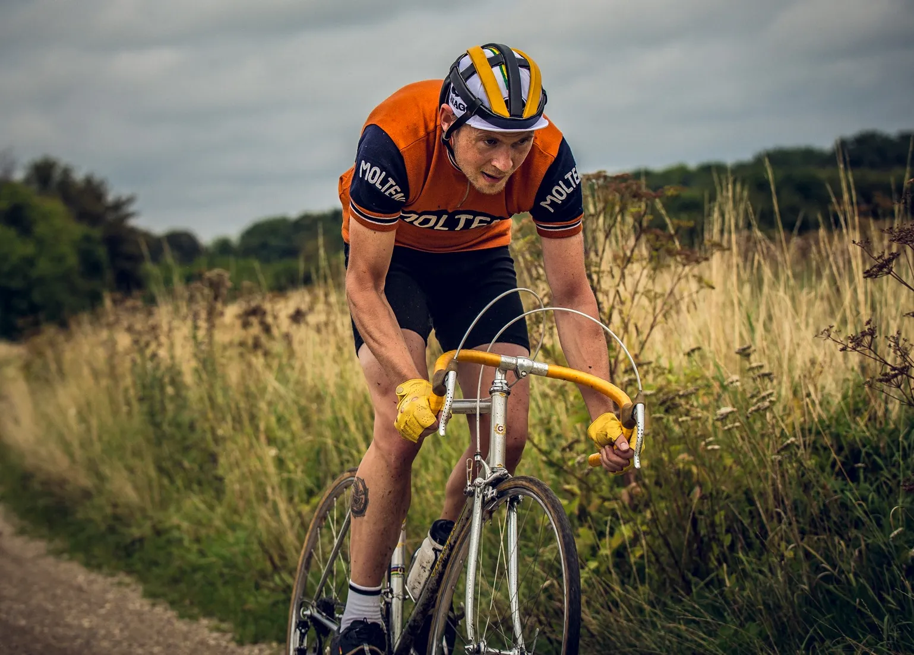
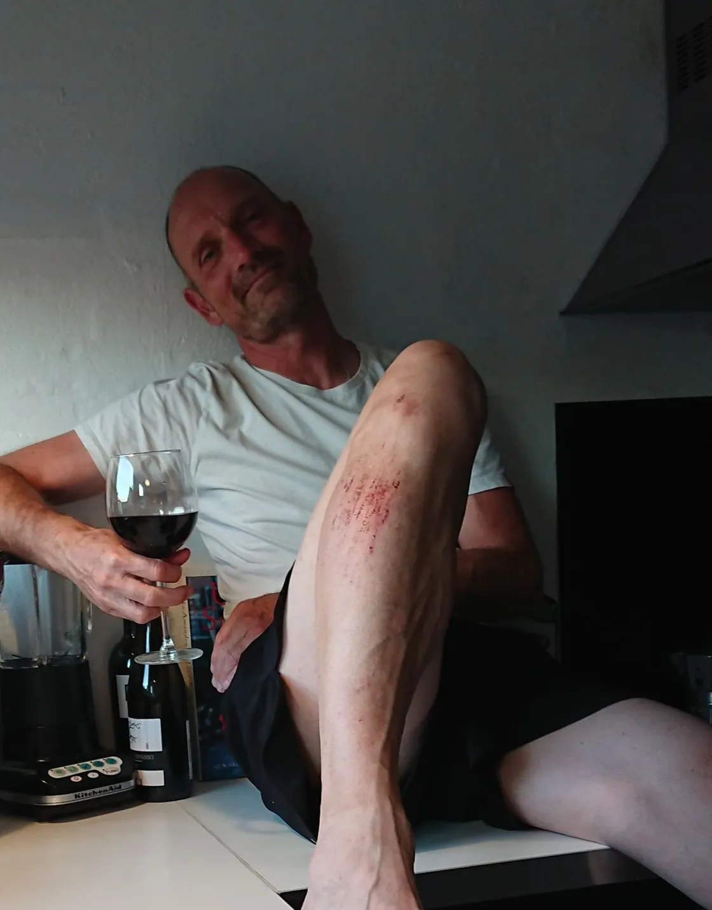
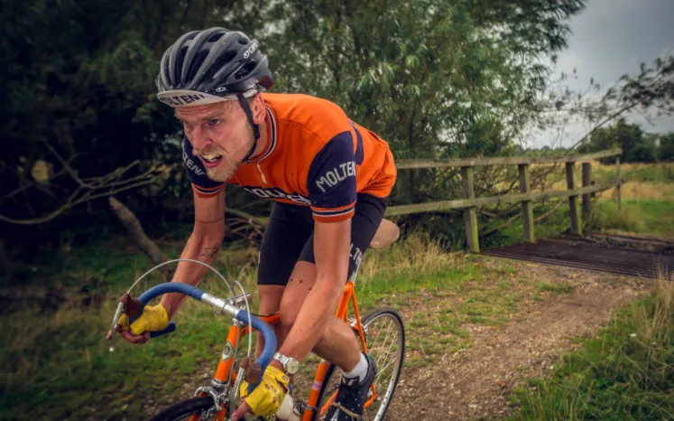

Optakt: Kroppedal Grand Prix

Kroppedal Grand Prix, der igen i år køres som criterium på 28 km over 8 omgange på grus, græs og kvægriste ved Taastrup i det Sjællandske er i år mere åbent end nogensinde. Den 4-foldige mester, Squadra Moltenis Mark Petersen stiller nemlig ikke op den 23. august.
Jeg deltager i et fysiologisk eksperiment, hvor jeg skal holde pause fra cykling i en længere periode og derefter teste hvor hurtigt jeg kan komme tilbage i topform, fortæller Mark. Lidt ligesom Froome, men med en strategi der indeholder signifikant flere lakridspiber og mere belgisk øl. Jeg tør godt love, at det kommer til at give et noget andet resultat end Froomeys missede Tour de France deltagelse.


Det er dog ikke kun Mark, der vil blive savnet på stregen søndag. De seneste UCI-løb har kostet mange faldne ryttere og efter Fabios knuste tænder og Remcos brækkede bækken var det Kaptajn Bjørnsteens tur til at ryge i gruset i den forgangne weekends GPVÅ. (http://squadramolteni.dk/loebsberetninger/grand-prix-vejle-aadal-2020/)


Sæsonen er heldigvis ikke ødelagt for mig, udtaler Bjørnsteen. Mine uldshorts tog det meste af slaget og de 3 liter blod jeg mistede, er allerede 32% regenereret takket være Dr. Chalotte Thomsens regelmæssig Amarone-påfyldning lørdag aften. Men jeg når desværre ikke at blive klar til Kroppedal. Det er derfor op til Carsten Jakobsen, Jens Langergaard, Jeppe Thiemer og Kristian Blume at sørge for endnu en Molteni-sejr. Mine arme kom ikke til skade i styrtet, så de hårde lammere står i kø hvis de fire drenge fucker op! slutter Kaptajnen med alvorlig mine.
Squadra Molteni stillede sidste år med 9 ryttere til Kroppedal, men Corona-loftet på 4 ryttere bliver respekteret. Maria Winther, der sejrede i kvindernes GPVÅ sidste weekend – og i Kroppedal i 2017 – er således heller ikke til start.
Jeg elsker ellers grus og pavéer, så jeg glæder mig allerede til næste år, smiler Maria inden hun haster ud til dagens 3-timers træningspas.
Fungerende kaptajn for Sq. Molteni bliver Jeppe Thiemer, der scorede 2.pladsen i sidste års udgave af Kroppedal Grand Prix. ”Det er som altid et af sæsonens helt store løb – og helt store mål for mig”, fastslår Jeppe. Det er en ære at køre som kaptajn og jeg har haft en god optakt til løbet. Senest har jeg pumpet helt frisk helium i slangerne, så jeg ikke skal køre rundt på gammel, tung luft. De siver lidt ved 10 bar, men det betyder bare, at forfølgerne kommer til at lyde som Mickey Mouse hvis de prøver at overhale mig.


Kroppedal Grand Prix køres søndag 23. august – med start fra Kroppedal Museum kl. 12.30 og hindbærsnitter fra ca. kl. 13.09.